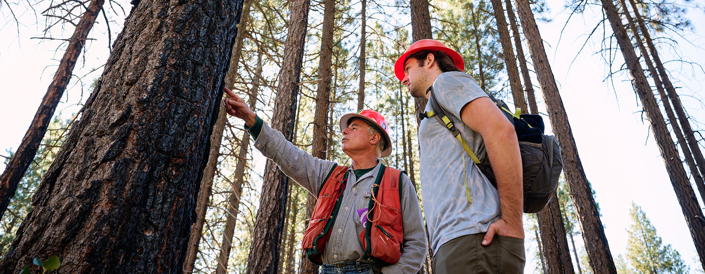

- Dendrochronology & Memory Studies — Half hard science, half meditation on time — students learn to read tree rings for climate and fire history,
then pair that with a humanities module on how forests function as living archives and sites of collective memory (old-growth stands as "witness trees" to
historical events). Fieldwork happens in the college-owned Alder Hollow woodlot.
- Cartography & Speculative Geography — half traditional GIS/mapmaking, half "map the impossible"
(fictional worlds, historical guesswork, sensory maps). Capstone: students design a map of a place that doesn't exist and defend its internal logic.
- Applied Folklore — studies how myths and urban legends evolve, with a field-methods component where students collect stories
from the surrounding county.
- Sound Design & Acoustic Ecology — split between music-tech and environmental science; students record and manipulate "soundscapes" of
local ecosystems.
- Canopy Ecology & Vertical Fieldwork — Students train in rope-and-harness canopy access techniques to study life in
the forest's upper layers — epiphytes, canopy-dwelling insects, bird nesting behavior. Famously oversubscribed every fall; there's a lottery for canopy-climbing
certification slots.